Census Data
| 1900 | 1910 | 1920 | 1930 | 1940 | |
| Harry G. Vining | 31 | 40 | 50 | 60 | dead |
| Ella Mae (Conant) Vining | 24 | 34 | 44 | 53 | 64 |
| daughter Vining | dead [see note below] |
||||
| son Vining | dead [see note below] |
||||
| Minnie Louise Vining Jr. [adopted] | 8 | 17 | living in separate household | dead |
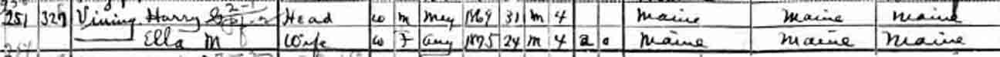
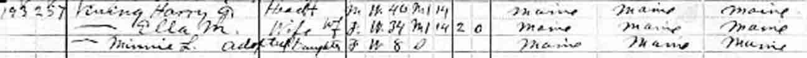
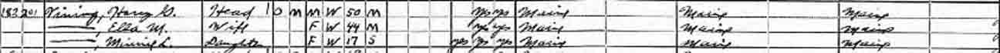
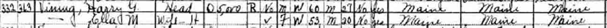
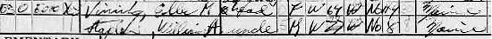
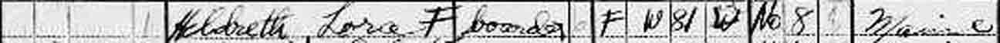
Death Data
Obituary for Ella Mae (Conant) Vining. Note the discrepancy in her birth date between her obituary and her gravestone (below the obituary).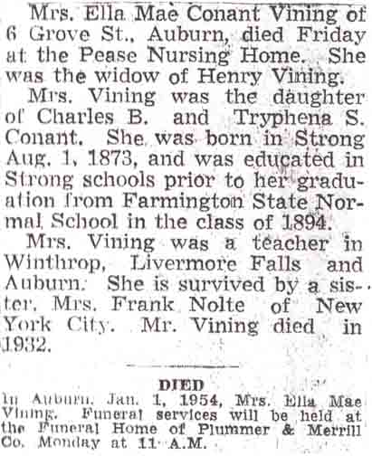
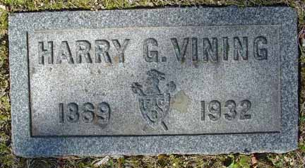
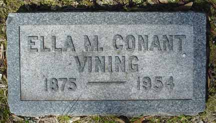
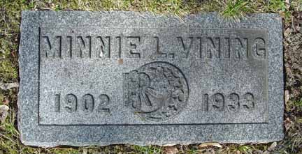
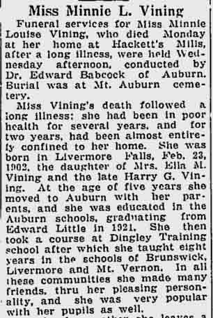
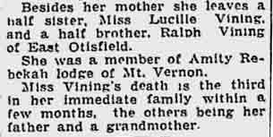